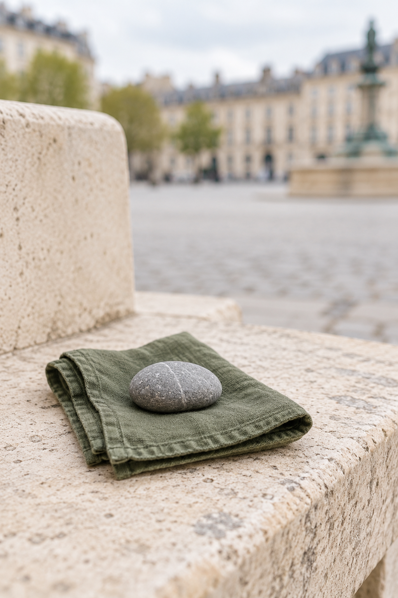

Public moments
Panic in Public: Small Ways to Make More Room for Yourself
Updated 2026-10-26
You do not have to look calm, explain yourself, or make a perfect decision. One private next step can be enough.

When panic or strong anxiety rises in public, the feeling can come with a second pressure: everyone will notice; I have to get out; I have to make it stop. You may be on a bus, in a queue, at work, or standing somewhere with no obvious quiet corner. You do not have to solve the whole situation at once. You can start by making the next minute a little less crowded.
Do not assume a new or severe symptom is panic.
This guide cannot assess symptoms or tell you whether you are having an emergency. If you think you may need urgent medical help, contact your local emergency service. If you are in immediate danger or at risk of harm, seek emergency or crisis support now.
You are allowed to pause without making a scene
A pause can be very small. You might let the person behind you go first, step to the side of a queue, sit on the nearest bench, or stand near an exit without committing to leave. If staying where you are feels possible, you can stay. If changing where you are feels kinder, you can do that too. There is no prize for pushing through, and no rule that you have to escape immediately.
Give your attention one ordinary job
Choose something around you that does not ask much back. Notice the edge of a window, the coolness of a handrail, the weight of your bag, or one sound underneath the others. You do not need to prove that it is helping. It is simply one place for your attention to land while the rest of the moment keeps moving.
Make one discreet choice
In public, a quiet option can be easier to reach for than a full exercise. You could take a sip of water, loosen your shoulders, look at a familiar photo, read one sentence, or put on a steady sound through headphones. If breathing exercises make you more aware of discomfort, you do not have to use them. Back offers Breathe alongside Ground, Distract, Move, Listen, and Read because a different route might fit better today.
Use a simple sentence if you need space
You do not owe strangers a full explanation. If words are needed, a short sentence is enough: “I need a minute.” “Could I sit here?” “I am not feeling well.” Or, if you are with someone you trust: “Can you stay with me for a moment?” You can make the words your own, or say nothing at all if that feels safer.
Let support be an option, not a test
Reaching out can be as small as opening a message draft or sharing your location with a person you have already agreed to contact. Back can open your phone’s system call or message screen for a trusted contact when you choose; it does not call or send anything by itself. If your first person is unavailable, that is not a sign you should manage alone. A second person, a local support route, or professional help can belong in the plan too.
When more support is the next right step
If you are avoiding places, changing your routine, or finding that anxiety or panic is repeatedly getting in the way of daily life, consider speaking with a qualified health professional. Support can help you make sense of patterns and options. It can sit alongside the small things you do in the moment.
Further reading
One quieter choice is enough.
You can pause, orient to one ordinary thing, and choose the support that feels possible next.
Find Back support and urgent-help informationBack works offline and needs no account. Open it when the next minute feels hard.
Download on the App Store